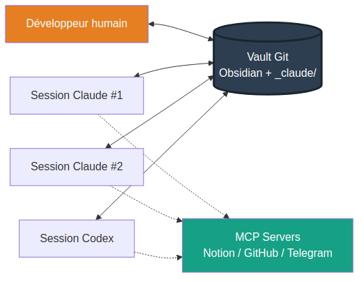
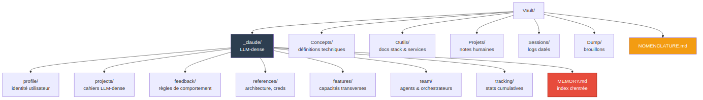
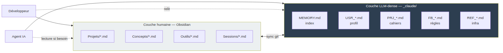
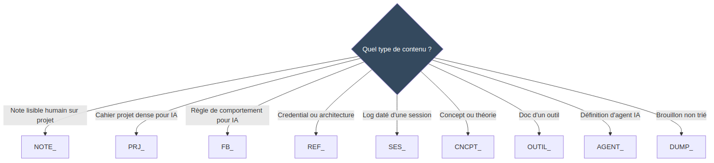
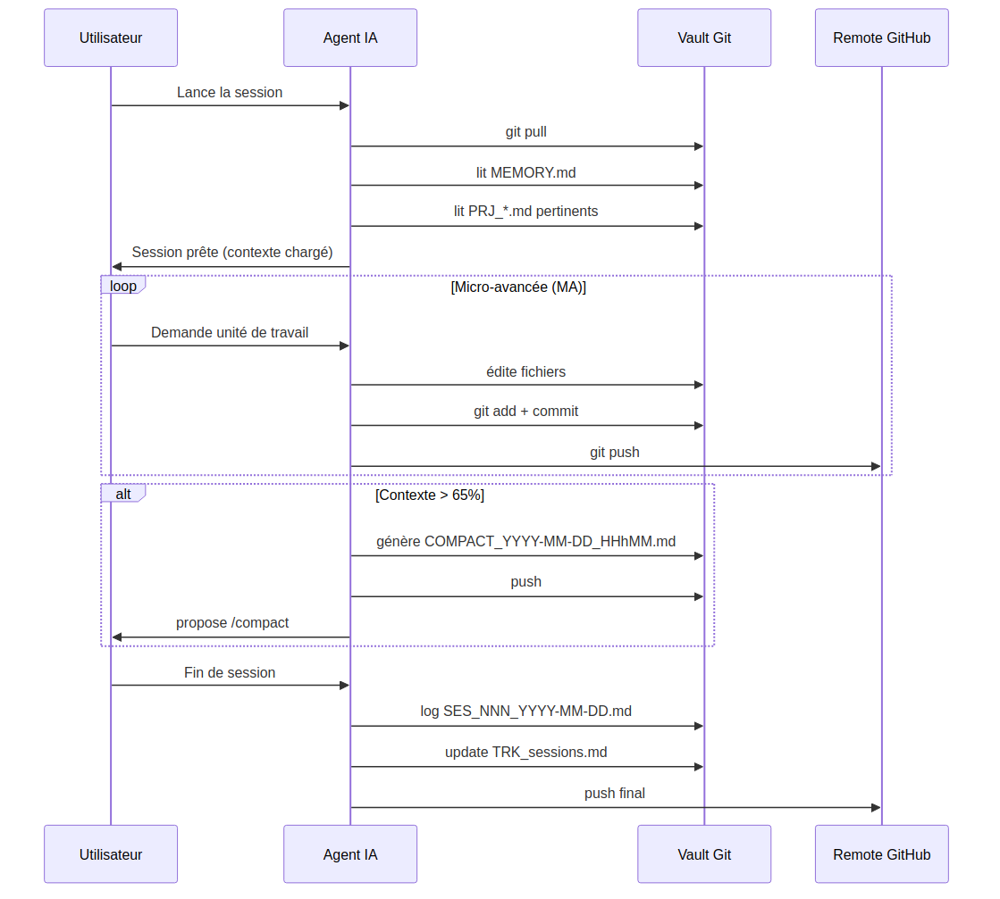
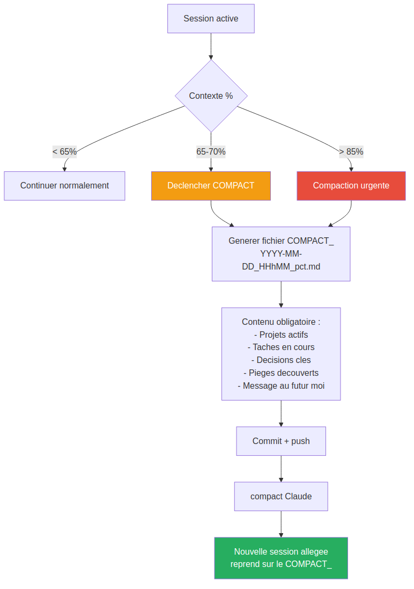
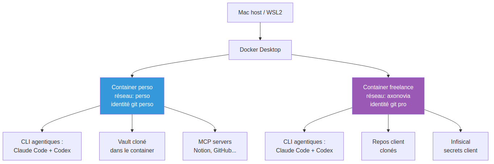
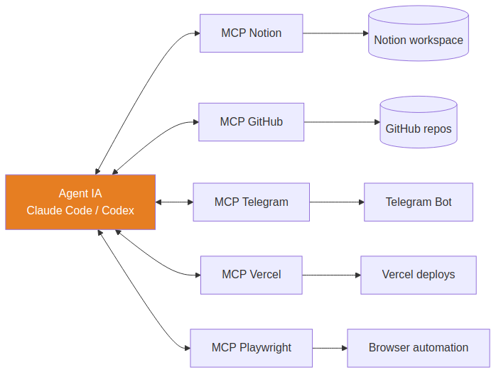
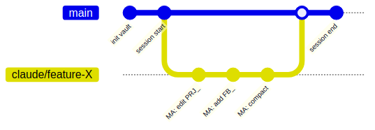

Une architecture de travail entre un développeur humain et plusieurs agents IA (Claude Code, Codex…) centrée sur un vault partagé, versionné et persistant. Chaque session démarre avec le même contexte. Aucune dérive. Zéro perte d'info entre deux conversations.
Chaque session d'IA commence en lisant la même source, et termine en la mettant à jour. Pas de RAG externe, pas de base vectorielle : juste du Markdown versionné dans Git, structuré pour être lu par les humains et par les modèles.

Le vault sépare physiquement deux mondes : les notes lisibles dans Obsidian, et le dossier _claude/ pensé pour être consommé par des modèles. Chaque couche a ses règles, ses préfixes, ses contraintes.


Chaque fichier porte un préfixe qui détermine son type, son emplacement et son cycle de vie. Format :
<PREFIX>_[<TEMPOREL>_]<slug>.md
| Préfixe | Usage | Dossier |
|---|---|---|
| PRJ_ | Cahier projet LLM-dense | _claude/projects/ |
| NOTE_ | Note projet humaine | Projets/ |
| FB_ | Règle de comportement IA | _claude/feedback/ |
| REF_ | Credential, architecture, token | _claude/references/ |
| USR_ | Profil utilisateur | _claude/profile/ |
| SES_ | Log de session daté | Sessions/ |
| COMPACT_ | Sauvegarde pré-compaction | Sessions/_compact/ |
| CNCPT_ | Concept, théorie | Concepts/ |
| OUTIL_ | Doc d'un outil / stack | Outils/ |
| FEAT_ | Feature transversale | _claude/features/ |
| AGENT_ | Définition d'un agent IA | _claude/team/ |
| TEAM_ | Orchestrateur d'agents | _claude/team/ |

Une session suit un protocole strict : pull → lecture mémoire → travail en micro-avancées commitées → compaction proactive → push final. Le contexte d'un modèle est une ressource limitée : on le gère, on ne l'attend pas.


Chaque contexte de travail (perso, client A, client B…) tourne dans son propre container : réseau séparé, identité git propre, aucun volume monté. Les intégrations externes passent par des MCP servers, ajoutables à chaud.


Une unité atomique de travail = un commit. L'historique raconte exactement comment l'IA a pensé, étape par étape. Un crash en plein milieu ? Le dernier commit est toujours récupérable depuis n'importe quelle machine.

Le vault Git. Pas d'info critique ailleurs.
Tout est versionné, tout est récupérable.
Humain ↔ LLM-dense, jamais mélangés.
Aucun travail perdu sur un crash.
Un container par client/projet, identités séparées.
Chaque outil a l'accès minimum nécessaire.
Mieux vaut une session lente et exacte qu'une session rapide et approximative. Un agent yes-man qui laisse passer les erreurs est moins utile qu'un interlocuteur qui challenge.
Setup complet, onboarding, adaptation à ton stack, formation de ton équipe. Je suis disponible pour des missions courtes (1 semaine) ou longues.